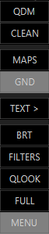
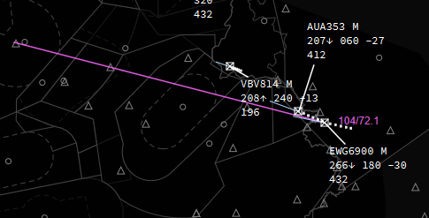
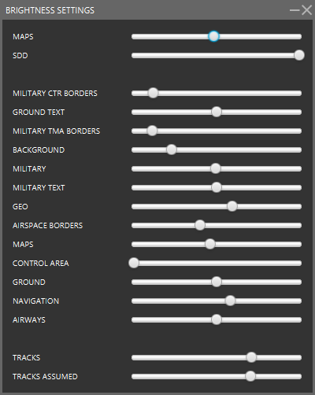
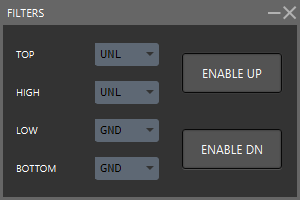

General Pop Up Menu
The General Pop Up Menu can be triggerd by pressing the right mouse button anywhere on the main radar screen, just not over a label or target.
And it looks like this

QDM
Displays the magnetic compass direction from the current mouse position to wherever the pointer is moved; when the mouse is next clicked, a line will be drawn between the two points. The numbers at the end of the line indicate the magnetic bearing from the initial point to the end point, and the number after the “/” indicates the distance between them in miles. If a radar target is double-clicked at the end of the QDM line, it will be locked to that line and move with the target, constantly updating the bearing and distance.

Notice that the QDM in the image above starts at EBBR and goes towards the aircraft. In this example, EWG6900 is at bearing of 104 degrees and at 72.1 nautical miles from EBBR, as seen from EBBR. If you would want to know the oposite direction you would need to use the QDM function of the target or callsign pop up menu.
The QDM from the general menu will start where you right clicked on the radar to open the pop up menu
CLEAN
The clean function removes any and all temporarily added aid lines which have been drawn, including QDM, SEP, and EXPLT.
MAPS
Opens up a separate window which lists the map options available in your FIR. The MAPS window may be left open, or closed after making a selection from it.
GND
Toggles the visibility of labels for unassumed targets on the ground; if you are a radar controller you probably want ground labels turned off.
When zoomed in enough on an airport the ground labels will become visible even if GND is off
TEXT >
Opens a dialogue box to input a text message to be sent to all pilots of the aircraft using the your COM frequency.
In a text entry dialog, special-use commands may be entered:
- .atis <callsign> - requests the ATIS of the specified controller.
- <xxx.xxx> <message> - send a message to the COM frequency specified by the x's. Note that you will not receive this message in your TXT IN window as you will not be tuned to that frequency!
- .pm <callsign> <message> - sends a private message just to the specified callsign. Works even if the callsign is outside visibility range.
- .atc <message> - sends a message to the ATC coordination channel.
- .guard <message> - sends a message to the safety-com channel.
-
.wallop <message> - sends a message to all online supervisors, requesting assistance.
-
.bc <message> - broadcast a message to all network clients [Supervisor user only].
- .kill <callsign> <message> - forcibly disconnect the callsign issuing the message [Supervisor use only].
- .info <callsign> - request connection information for the callsign [Supervisor user only].
The above messages may also be used in PM (personal message) dialogue, in which case the <callsign> may be left out as it will apply just to the user to whom the PM is addressed.
BRT
Opens the brightness dialogue box, used to adjust the relative brightness of different map elements.

NOTE: Only the two (2) top items and the two (2) bottom items are fixed items, they show up in every FIRDEF. The middle section may look different depending on the FIR you are using as they are defined within the FIRDEF
FILTERS
Opens the filter dialogue window, used to restrict which targets are visible dependant on their altitude/flight-level.

- TOP - Any targets with a current level higher than specified will not be displayed on the radar.
- HIGH - Targets with a current level higher than specified, but below the TOP level, will be displayed but using a different style of “Filtered” label. This enables a limited set of information to be displayed for targets that are “just above” the vertical limits of interest to the controller.
- LOW - Targets with a current level lower than specified, but above the BOTTOM level, will be displayed but using a different style of “Filtered” label. This enables a limited set of information to be displayed for targets that are “just below” the vertical limits of interest to the controller.
- BOTTOM - Any targets with a current level lower than specified will not be displayed on the radar.
- ENABLE UP - If this is highlighted then the TOP/HIGH settings will be enabled; if it is not highlighted then the TOP/HIGH settings will be ignored and there will be no upwards filter.
- ENABLE DOWN - If this is highlighted then the LOW/BOTTOM settings will be enabled; if it is not highlighted then the LOW/BOTTOM settings will be ignored and there will be no downwards filter.
QLOOK
Temporarily removes any filters.
FULL
Toggles full-screen mode on or off.
MENU
Toggles the menu bar on or off.